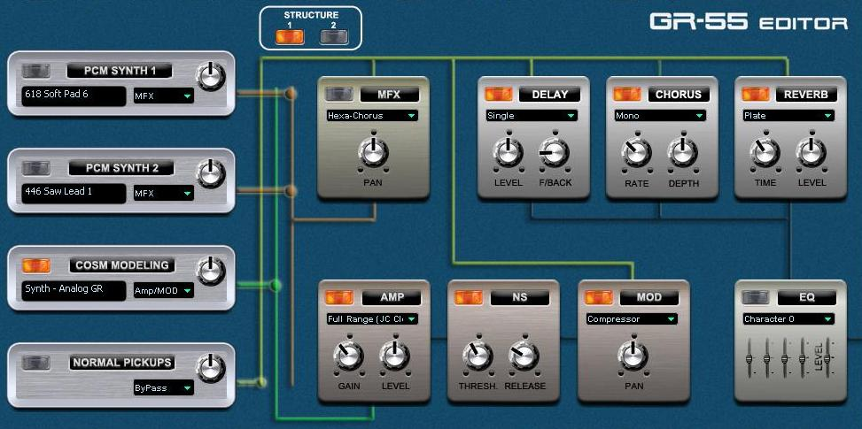

IndexEditing Effects
There are eight effects modules on the main editor panel, as seen in the following screenshot:

The effects modules are the eight square boxes shown in two rows of four (at the right) in the above image and are listed below:
- MFX - Multi-Effects
- DELAY
- CHORUS
- REVERB
- AMP - Amplifier Modeling
- NS - Noise Suppression
- MOD - Modulation
- EQ - Equalization
Effects Routing Structure and Line Routing Options
For each KATANA patch, the tone modules and the effects modules have separate routing capabilities, as follows:
- Tone modules (PCM Synths 1/2, COSM Modeling, and Normal Pickups)
can be routed to enter the effects chain at either the MFX effect
module input, at the Amp Modeling input, or bypass both to connect at
the DELAY/CHORUS/REVERB inputs.
- The
effects modules chain can be structured to put the guitar effects (AMP,
NS and MOD) either after the MFX effect module (Structure 1) before the
MFX effect module (Structure 2).
When
working in the KATANA FloorBoard Editor, the lines shown in the above
screenshot will change to indicate the selected routing structure and
line route options. The big dots on the lines indicate a connection
from the tone module to the effects module chain input. Where the lines
cross and there is no dot, there is also no connection.
Editing Effects
You
can select other types of an effect by clicking the "Type"
field below the effect title and selecting one of the alternate
effect types, e.g. for the MOD effect you can select Limiter, Phaser,
Flanger or other modulation effects. You can activate any of the
effects modules from the KATANA FloorBoard Editor main panel by using
the ON/OFF switch and make basic changes using the visible knobs or slider controls.
You
can also perform advanced effects editing by clicking on the effect box
or label to open its parameters panel, exposing additional controls if
available. If you select another effect type, a different set of knobs appears specific
to that effect type to allow you to configure additional parameters for
the selected effect type. Details about individual effects are
available in the owner's manual and in the help sections for the
specific effect.